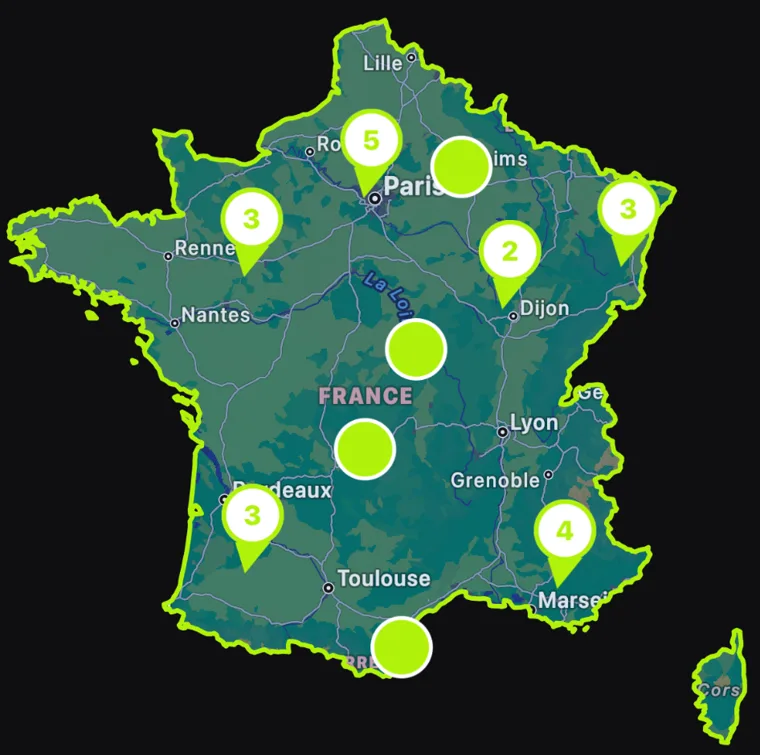
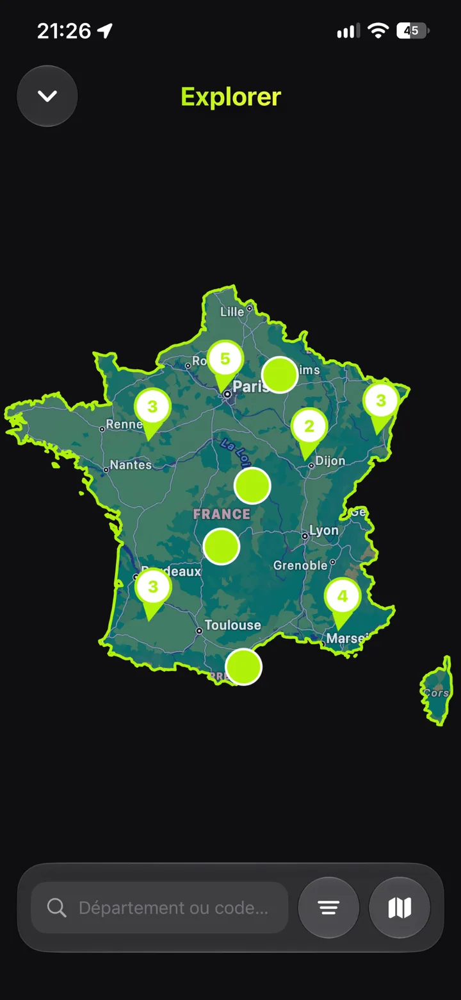
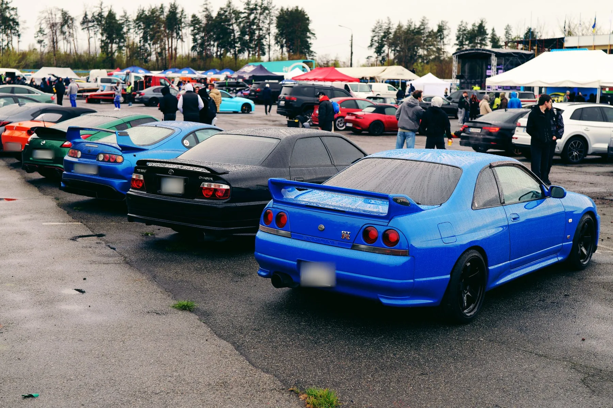

Par la carte
Les rassemblements sont regroupés par secteur. Tu zoomes sur ta région, tu touches un marqueur, tu ouvres la fiche.
Rasso arrive bientôt sur Android. En attendant, l'application est disponible sur iPhone.
FÉtape 1 · Explorer
Un rasso, c'est un rassemblement de passionnés : une rencontre sur un parking, une sortie, un salon, une journée circuit. Rasso les réunit sur une seule carte.
Télécharger sur l'App StoreBientôt sur Android
FChercher

Les rassemblements sont regroupés par secteur. Tu zoomes sur ta région, tu touches un marqueur, tu ouvres la fiche.
Trois filtres : ton département, la France entière, ou tout afficher. Chaque ligne donne le lieu, la date et le type de véhicules.
Tu pars en week-end ? Tape le nom ou le code du département et regarde ce qui s'y organise.
Les rassemblements affichés sur cette page sont des exemples.

FOrganiser
Tu connais un bon spot et tu veux y réunir du monde ? Publie ton rassemblement, il apparaît sur la carte.